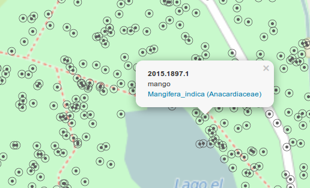

what's in a name
Luca Ghini (Casalfiumanese 1490 – Bologna, May 4, 1556) was an Italian physician and botanist, notable as the creator of the first recorded herbarium, as well as the first botanical garden in Europe.(Wikipedia)
screenshots

sample videos

web-geo-future
About Ghini
Ghini is a software application to help manage collections of botanical specimens. It is intended for (and it is indeed used by) botanic gardens, herbaria, private collectors, etc. to manage their collection information.
For those who know and/or use Bauble and are wondering, Ghini is Bauble, only with a different name, which is easier to pronounce for the current Italian maintainer, and easier to explain if anyone asks.
Features
- Ghini is designed to be simple and fast, elegant and intuitive.
- Ghini is open and free. Ghini is licensed under the GNU Public License, which approximately means that anybody can download, study, distribute, change the source code for Ghini as long as all derived work stays just as free as Ghini is now. This does not in any way affect how you decide to copyright and license the data you manage with Ghini.
- Ghini is cross-platform. Ghini supports both Linux and Windows and has been successfully ported to other platforms whenever there was interest.
- Ghini can use different database backends and is tested against SQLite, PostgreSQL, MySQL/MariaDB.
- Ghini can generate reports through the extremely flexible Mako formatter. This allows you to layout your data any way you wish and save it in a just about any format you can imagine including PostScript, XML, or HTML. We acknowledge that writing a mako script is not something we can expect from a botanist, so we are organizing an on-line repository for common reports.
- Ghini can export data in CSV or Access to Biological Collection Data (ABCD) format. Ghini adheres to the ITF2 standard for field naming and content, but it does not yet contain an import-export feature for this format. Other import-export formats can be discussed and added to Ghini if the need arises.
- Ghini supports tagging. You can tag any arbitrary data stored in a Ghini managed database with arbitrary names. This way you can create collections of records organized the way you want with names you give them.
- ....and lots more. (And I mean lots!)
User Reviews
What User Say About Bauble and Ghini
- Thank you for the great software! I was working on my own collection manager in Rails when I found bauble. I'm happy to have found something I can use straightaway. [K.B. - (bauble forum)]
- Thank you for developing this and [...] for the privilege of using your program. [N.B. - Lovett Pinetum]
- Acá ya lo tenemos instalado y nos funciona de maravilla. [T.J. - Jardín Botánico Quito]
- Un super logiciel. Félicitations pour votre initiative libre et open-source. [M.C. - Telabotanica]
- at work we [use] Bauble version 1.0.11 on a windows 7 system, [...] version 1.0.53 on my Ubuntu 14.04 laptop at home and also on [a] MacBook Air (great demonstration of cross platform compatibility!). [R.D. - Mackay Regional Botanic Gardens]
Documentation
The current documentation for Ghini is hosted at readthedocs.
Installation
Choose the version you want to install, open its documentation page and look for the installation instructions.
The most likely thing is that you want to read it all here, and you can probably find it translated in your preferred language.
Ghini Development
You can visit the project page and browse the latest source code from github at Ghini/ghini.desktop or check it out with...
git clone https://github.com/Ghini/ghini.desktop.git
Frequently Asked Questions
-
Why was the Bauble project started?
At Belize Botanic Gardens people felt that the other collection management software was either too expensive, inadequate or only supported Windows so they decided to create their own. -
But why for free?
Collection management software is out of reach for small institutions in developing countries. Bauble/Ghini contribute to providing unrestricted access to management of information related to biodiversity. -
What's this GNU Public License?
Ghini and Bauble are not just free as free beer, they are free as free speech. The GPL is a license that guarantees that the freedoms you are given with the product will stick to the product for ever. The GPL answers the question "what if someone makes it proprietary": only the owners of the copyright can do that, and currently that includes no less than 10 people. -
I found a bug. What can I do about it?
For bug reports, but also for technical and generic questions, get a github account and file a bug report here.
Contact
For more information about Ghini or if you have any other questions and you do not want to get a github account, please write to bauble@googlegroups.com. An administrator will reply as soon as possible.